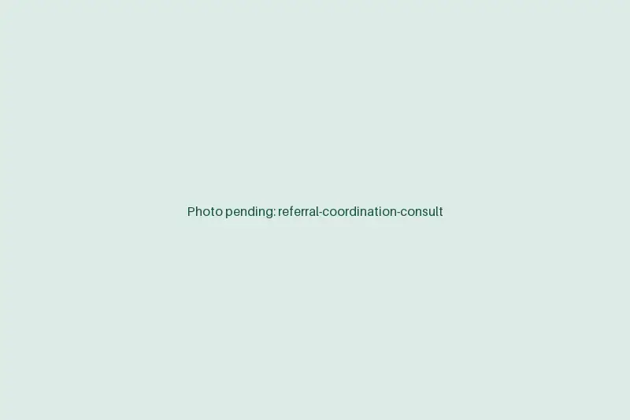

Referral management services that close the loop on every patient
A referral that sits in a fax tray is a patient who never gets seen. Our remote coordinators process incoming and outgoing referrals, book the visits and chase records until the loop is closed and the consult note is back with the ordering provider.
Book a discovery callAt a glance
- Works in
- Your EMR referral queue, e-fax and Direct messaging
- Handles
- Inbound and outbound referrals
- Tracks
- Every referral from receipt to consult note
- Starts
- About two weeks from kickoff

What our coordinators manage
A referral touches three parties and at least two systems. Someone has to own it the whole way.
Inbound intake
Log referrals from fax, portal and Direct messages, and check for missing demographics, orders or notes.
Coverage and auth check
Confirm insurance and any referral or auth requirement before the visit is booked.
Scheduling
Call the patient, book the appointment and send the referring office a confirmation.
Outbound referrals
Send your referrals with the right records attached and confirm the receiving office booked the patient.
Records transfer
Request and file outside records, imaging reports and consult notes against the right chart.
Status tracking
Keep every open referral on a list with its stage, next action and age, so none go stale.
How we set up referral coordination
Most referral problems are invisible until someone lists them. So that's where we start.
- Days 1 to 3
Trace the paths
Map how referrals arrive and leave today: fax lines, portals, Direct and who touches each one.
- Days 4 to 6
Define the stages
Agree the statuses a referral moves through and what counts as closed.
- Week 2
Clear the backlog
Work open and stale referrals first, reaching patients who fell through.
- Go-live
Run the loop daily
New referrals are processed every day, and aging ones are escalated to your contact.
What a closed loop is worth
Referrals are relationships with other practices. Handling them well is how you keep receiving them.
For your practice
- Fewer lost referrals, and the visits that go with them.
- Referring offices that get quick confirmations and keep sending patients.
- Consult notes back with the ordering provider in time for follow-up.
- A clear view of referral volume and time to appointment. [STAT: e.g. average days from referral received to appointment]
For your patients
- A call to schedule instead of waiting to hear back.
- Records already there when they arrive at the specialist.
- Less repeating their history to each new office.
Referral records never leave your system
Referrals carry diagnoses and outside records. Here's how we keep that information where it belongs.
- Your queue, your systemCoordinators work the referral queue inside your EMR and e-fax, not in a spreadsheet of ours.
- Nothing kept locallyIncoming records are filed straight to the chart. Nothing is saved on the workstation.
- No print, no downloadPrinting, file downloads and USB drives are disabled for every coordinator.
- One login per personYour practice issues and revokes each coordinator's credentials.
- BAA signed up frontOur Business Associate Agreement is in place before access is granted.
Referral management FAQs
How is referral management priced?
A flat monthly rate tied to coordinator hours, sized to your referral volume. There's no per-referral fee. We quote after mapping your volume on the discovery call.
Do you work with our EMR's referral module?
Yes. Coordinators work in the referral and order queues of systems like Epic, athenahealth, eClinicalWorks and NextGen, along with your e-fax service and Direct messaging.
How fast are new referrals processed?
New inbound referrals are logged and reviewed the business day they arrive, and patients are called to schedule within the window you set.
Is outsourced referral coordination HIPAA compliant?
Yes, when it runs this way: a signed BAA, work only inside your systems, named logins, and no printing, downloads or local storage. Every action shows in your EMR's audit trail.
What hours do coordinators work?
Your office hours in your time zone, so patients get calls when they expect them and referring offices reach someone during the day.
Find the referrals that are slipping
Pull a count of open referrals and how old they are. We'll talk through what's stuck and how a coordinator would clear it.
Book a discovery call